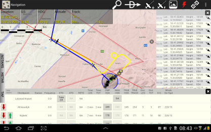

What is New
version 1.0.0.6
This version is mainly a bugfix release.
- Crash when dismissing airport seach in flighplan creation is fixed.
- Crashes on activation flightplans are fixed.
- Problem with adding of, and changing position of waypoints are fixed.
Additional
new features are the "directionline". This line extends form you
position into the direction of the course you are flighing.
This is a very handy tool to keep you on course of your predefined flightplan track.
Other changes are:
- Deletion of fligtplans via the delete button in the "Activate fligtplan" window
- New updated database